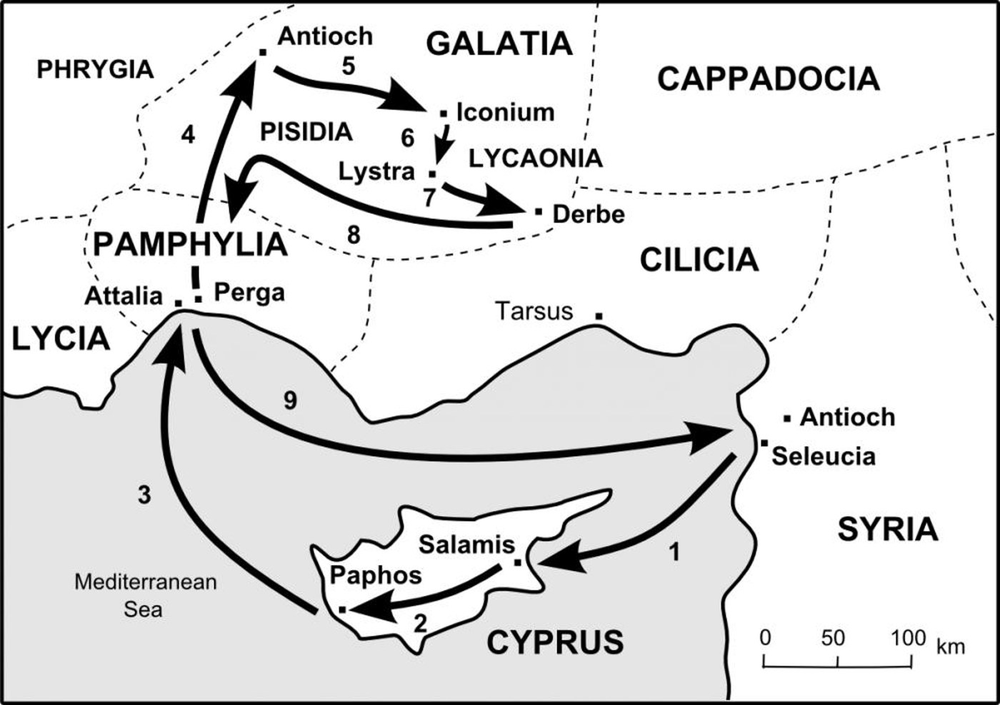

Set apart for me Barnabas and Saul for the work to which I have called them. Acts 13:2
This session focused on Acts 13 as a major turning point in the book — the shift from Jerusalem-centered ministry to Gentile-world missions launched from Antioch. The group looked at the five diverse leaders of the Antioch church, the Holy Spirit's initiative in commissioning Barnabas and Saul, and the encounter with Bar-Jesus and Sergius Paulus on Cyprus. A substantive discussion of Christian fasting — its purpose, its variety, and how it differs from other religious practices — closed the session.
A Pivotal Chapter
- Acts 13 marks the transition from Peter as the central apostolic figure to Paul, and from Jerusalem as the mission base to Antioch as the launching point for Gentile outreach.
- The book is more accurately titled "Acts of the Holy Spirit": every mission initiative — speaking, choosing, sending — originates from the Holy Spirit, not from human planning or church programs.
- Luke's recurring emphasis: the Word of God, not miracles, is the primary cause of conversion.
The Five Leaders of Antioch (vv. 1–3)
The passage introduces five leaders whose cultural and ethnic diversity shows how far the gospel had already spread beyond Jewish society:
- Barnabas — known for radical generosity (selling possessions to share with the church) and for serving as the bridge between Paul and the Jerusalem apostles, who were suspicious of Paul because of his past as a persecutor. He became a key leader in Antioch.
- Simeon called Niger — "Niger" means "black" in Latin, which likely identifies him as a Black African from North Africa. Many scholars believe he is the same Simon who carried Jesus's cross when Jesus was too exhausted to continue.
- Lucius of Cyrene — little is known about him personally, but Cyrene is in North Africa, adding another distinct cultural background to the team.
- Manaen — raised together with Herod Antipas (the ruler who beheaded John the Baptist and took part in Jesus's trial), though not as a blood relative. Their close upbringing likely gave Manaen an elite social background.
- Saul — listed last here, he becomes the dominant missionary figure for the rest of Acts; his missionary journeys form the backbone of the book's second half.
These five came from different regions (North Africa, Judea, the Roman elite), ethnicities, and social classes, yet served together under one Lord with one shared calling — a model directly applicable to the multicultural church today.
The Holy Spirit's Commission (vv. 2–4)
While the leaders were ministering to the Lord and fasting, the Holy Spirit spoke directly: "Set apart for me Barnabas and Saul for the work to which I have called them." The Greek word for "ministering" (leitourgeo) carries the sense of priestly service — just as Old Testament priests served God in the tabernacle under the Old Covenant, these leaders served God under the New Covenant.
The key theological point is that the initiative belongs entirely to God. The mission was not a church program or a human strategy session; it arose from the leaders' humble, fasting posture before God. The church then laid hands on Barnabas and Saul, prayed, and sent them out — the first formal missionary commissioning in church history, establishing a pattern still practiced today.
Mission Belongs to the Holy Spirit
The Holy Spirit spoke (identified the missionaries), chose (selected Barnabas and Saul), and sent (dispatched them to Cyprus). Before chapter 13, missionary activity from Jerusalem was largely reactive — driven by persecution, or by divine prompting in individual cases such as Peter's. From chapter 13 onward, Antioch becomes a deliberate, Spirit-directed sending church aimed at the Gentile world. The geographical shift from Jerusalem to Antioch mirrors the mandate of Acts 1:8 — from Jerusalem, to Judea and Samaria, to the ends of the earth.
Living Sacrifice vs. Dead Sacrifice
Under the Old Covenant, priests offered animal blood sacrifices — temporary and repeated, because they could not fully resolve sin. Under the New Covenant (Romans 12), all believers — not just leaders — are called to offer their bodies as living sacrifices: every area of life (work, family, relationships, conflicts) presented to God. A "Sunday-only Christian" who lives without reference to God the rest of the week is not functioning as a living sacrifice. These five leaders embodied the alternative: their entire lives were given to God, which is why the Holy Spirit could speak to them as they fasted.
From Antioch to Cyprus: the Route
Antioch (in what is now Turkey, the ancient region of Syria) was the mission base. Cyprus was the first destination, and also the hometown of Barnabas. The journey proceeded through Roman-controlled cities and eventually returned to Antioch. A wider map shown in class placed the route within the Mediterranean world — Italy at the lower left, Greece and Turkey at the top center, and Egypt and North Africa along the bottom — to show how far the gospel would travel.

Bar-Jesus and Sergius Paulus (vv. 6–12)
Two contrasting figures appear on Cyprus. Bar-Jesus (Elymas) was a Jewish sorcerer and false prophet. His name ironically means "son of Jesus" (Bar = "son of" in Aramaic), yet Paul called him a "son of the devil." He actively opposed Barnabas and Paul and tried to turn Sergius Paulus away from the faith. Sergius Paulus was the Roman proconsul of Cyprus — an intelligent, high-ranking official who was genuinely interested in hearing the Word of God and had personally invited Paul and Barnabas.
Paul, filled with the Holy Spirit, rebuked Bar-Jesus and declared a temporary blindness upon him. The man immediately went blind and had to be led by the hand. A critical nuance follows: Luke specifically records that Sergius Paulus believed because he was "amazed at the teaching about the Lord" — not because of the miracle itself. This is Luke's consistent pattern: miracles occur, but the Word of God is always the actual agent of conversion, not the signs.
The Name Change: Saul to Paul (v. 9)
Verse 9 is the first mention of "Saul, who was also called Paul." Luke does not explain the shift, because dual names were common in the multicultural Roman world. Saul was the Jewish name, used in Hebrew and Jewish contexts; Paul was the Roman name, used in Greek and Roman contexts. There are parallel examples: Simon/Peter (Jewish vs. Greek) and John/Mark (Jewish vs. Roman). The teacher noted that many people today likewise carry both a native name and an English name, for the same reason.
Discussion: Christian Fasting
A physician in the group raised questions: Must Christians fast regularly? How long should a fast last? Can fasting damage health, given cases of extreme fasting that lead to malnutrition?
Christian fasting vs. fasting in other religions
- Motivation. Other religions (Buddhism, Hinduism, Islam): religious duty, earning merit, enlightenment through suffering. Christian fasting: humility before God, seeking his will.
- Initiation. Other religions: rule-based or calendar-based. Christian fasting: Spirit-led, as needed.
- Goal. Other religions: spiritual elevation through enduring pain. Christian fasting: drawing closer to God and hearing his voice.
- Risk. Other religions: can become extreme and harm the body. Christian fasting: calibrated to individual capacity and health.
The purpose of fasting
The primary purpose is humbling oneself before God — setting aside fleshly desires and distractions to create space to hear God and seek his will. Fasting is always paired with prayer: it is not merely skipping food, but redirecting that time to kneeling before God. The humility that comes from physical hunger mirrors spiritual dependence — "Man does not live by bread alone." Christian fasting is not a ritual for earning merit; it is a Spirit-led, voluntary practice.
The variety of fasting
Fasting is not limited to abstaining from food:
- Food fasting: skipping one meal, skipping solid food while drinking juice, or a full fast.
- Media fasting: no social media, no news, no TV.
- Addiction fasting: abstaining from alcohol, gaming, chocolate, sweets, or other habitual pleasures.
- Digital fasting: no smartphone use — especially relevant for younger generations.
The key principle: do not judge others' fasting practices (for example, criticizing someone who drinks juice while fasting from solid food). Such judgment turns fasting into legalism.
Practical guidance
The duration and form of a fast should be guided by the Holy Spirit and by the individual's health — there is no universal rule. Examples mentioned: a monthly one-day fast for persecuted churches (a church practice); 40-day liquid-only fasts by some pastors (the teacher noted one pastor lost significant weight but gained much spiritually); and, as an analogy, the popular 16:8 intermittent fasting model, which shows that periodic abstention from food has recognized health benefits (metabolic health, blood sugar control, weight management). The Holy Spirit initiates and sustains the fast — just as he initiated the missionary work in Acts 13, he guides and empowers the fasting believer.
- Reflection: Is my whole life — work, family, relationships — offered to God as a living sacrifice, or only my Sundays?
- Reflection: When I fast, is it to humble myself before God and listen for his voice, or to earn merit? Am I judging how others fast?
- Next: The rest of Acts 13 (Paul's sermon, vv. 13–52) is relatively straightforward and will be covered in a written summary rather than a live session.